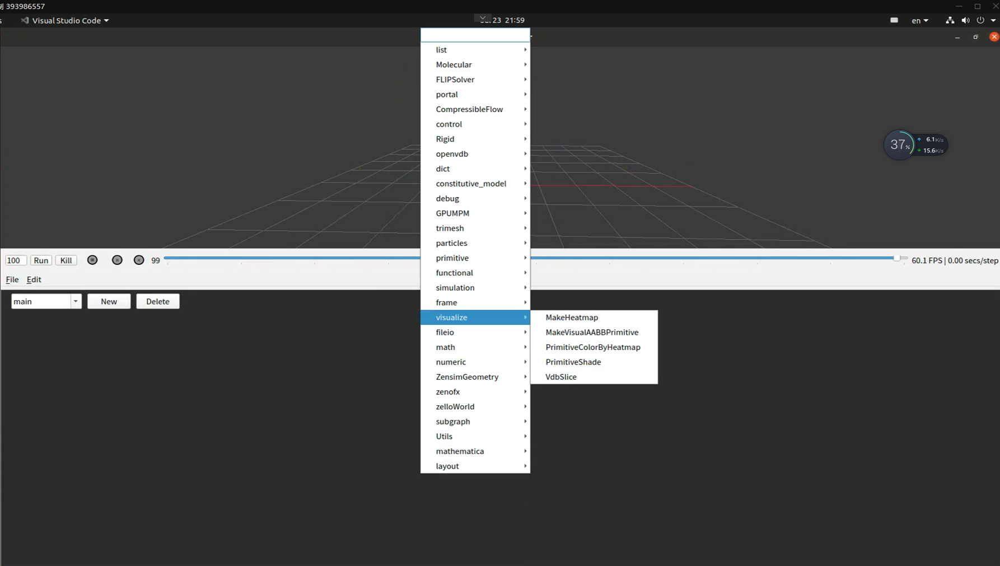
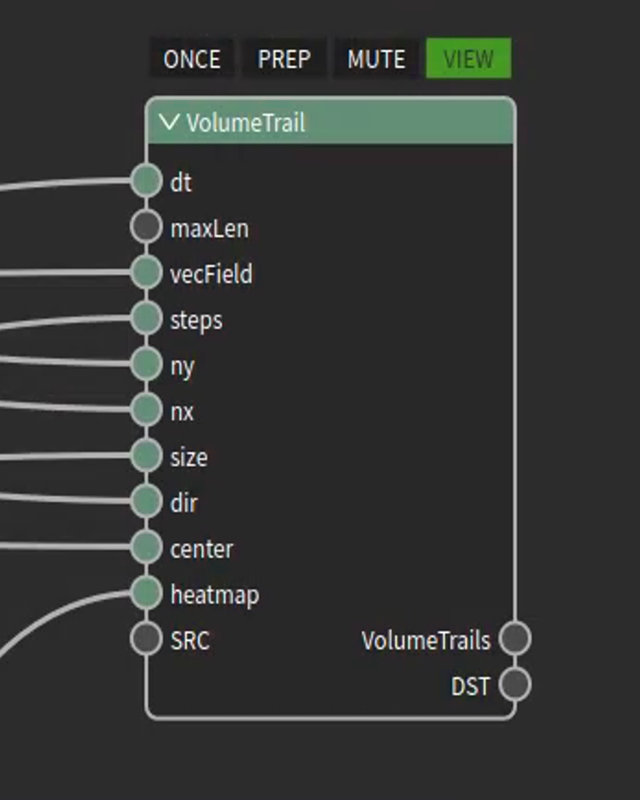

ZENO中的可视化¶
在ZENO中， 我们内置了一些可视化节点帮助用户对仿真数据进行可视化， 结合ZFX以及对Heatmap的调整， 设计简单的可视化节点实则妙用无穷， 在此，我们介绍两种常见的使用场景：
1. 对于标量场的显示¶
显示标量场可以借由ZENO的VDBSlice节点实现， 这是一个官方节点， 可以通过File->import->OfficialSubnets/vdbslice..zsg来导入到系统中使用(自动化导入会在下一个小版本完成更新)
加载后, 该节点会出现在右键->visualize->VdbSlice, 或者也可以通过tab->输入VdbSlice快速搜索再回车来完成.
将该节点添加到节点编辑面板,它长这样:

这个节点对应接收一个vdb网格, 并通过提供的channelName床创建一个携带”channelName”的, 分辨率为resolution的Primitive网格, 该网格的中心会被放置在origin位置, 转向normal方向, 并采样将”channelName”采样VDB数据后输出

之后, 我们再把采样出来的primitive交给我们的热力云图着色工具进行着色, 这个可视化的对象是一个从三维模型文件中计算得到的SDF(符号距离场), 黑色在里, 白色在外, 红色接近isosurface=0处. VdbSilic节点支持从任何角度切割一个体积场, 得到有效的可视化数据.
2. 对于矢量场的显示¶
在ZENO中显示矢量场, 则需要使用VolumeTrail节点. 通过File->import->officialSubnets->volumeTrail来导入volumeTrail节点有关的组件,VolumeTrail节点接受一个矢量场数据并对其进行矢量方向追踪, 一个典型的结果如下图所示:

为了使用volumeTrail节点, 我们需要提供给他以下数据
该节点会沿着输入速度场追踪路径线, 并自动地按照热力云图对速度的大小进行可视化